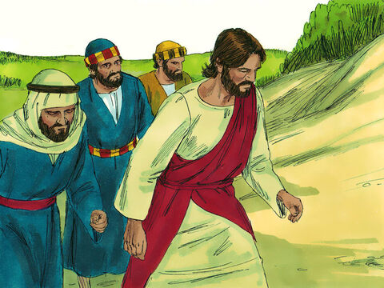
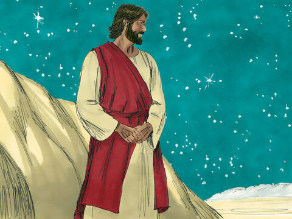
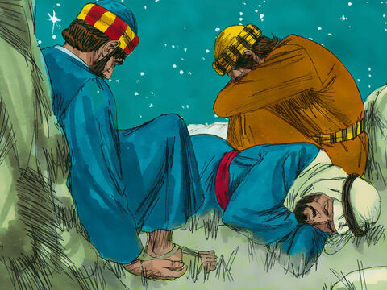
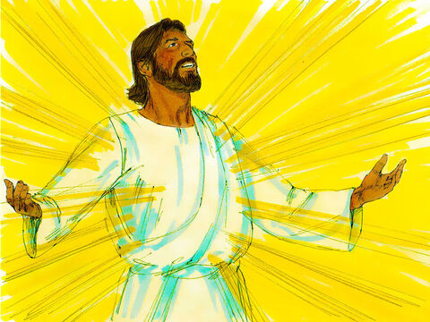
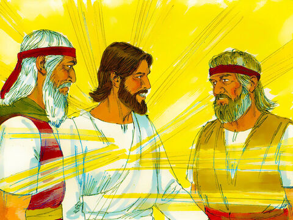
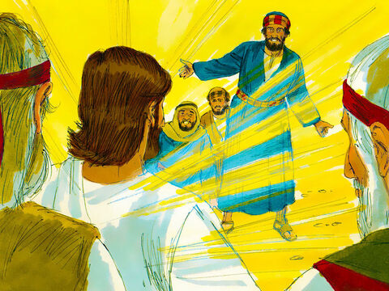
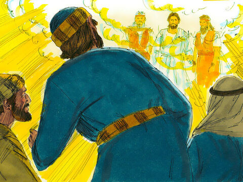
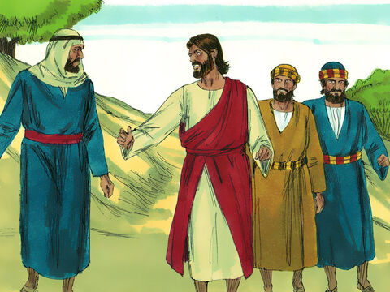
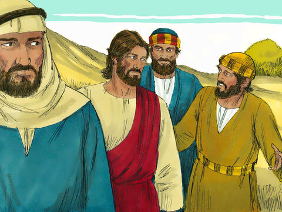
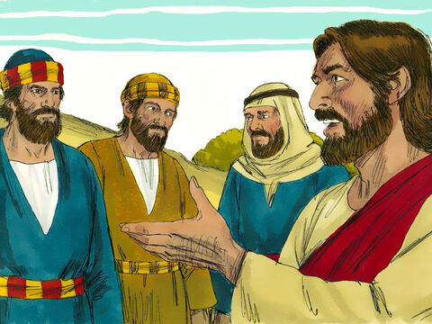

The Transfiguration
And after six days Jesus taketh Peter, James, and John his brother, and bringeth them up into an high mountain apart,
And was transfigured before them: and his face did shine as the sun, and his raiment was white as the light.
And, behold, there appeared unto them Moses and Elias talking with him.
Then answered Peter, and said unto Jesus, Lord, it is good for us to be here: if thou wilt, let us make here three tabernacles; one for thee, and one for Moses, and one for Elias.
While he yet spake, behold, a bright cloud overshadowed them: and behold a voice out of the cloud, which said, This is my beloved Son, in whom I am well pleased; hear ye him.
And when the disciples heard it, they fell on their face, and were sore afraid.
And Jesus came and touched them, and said, Arise, and be not afraid.
And when they had lifted up their eyes, they saw no man, save Jesus only.
And as they came down from the mountain, Jesus charged them, saying, Tell the vision to no man, until the Son of man be risen again from the dead.
And his disciples asked him, saying, Why then say the scribes that Elias must first come?
And Jesus answered and said unto them, Elias truly shall first come, and restore all things.
But I say unto you, That Elias is come already, and they knew him not, but have done unto him whatsoever they listed. Likewise shall also the Son of man suffer of them.
Then the disciples understood that he spake unto them of John the Baptist.
Matthew 17:1-13
- 
- 
- 
- 
- 
- 
- 
- 
- 
- 